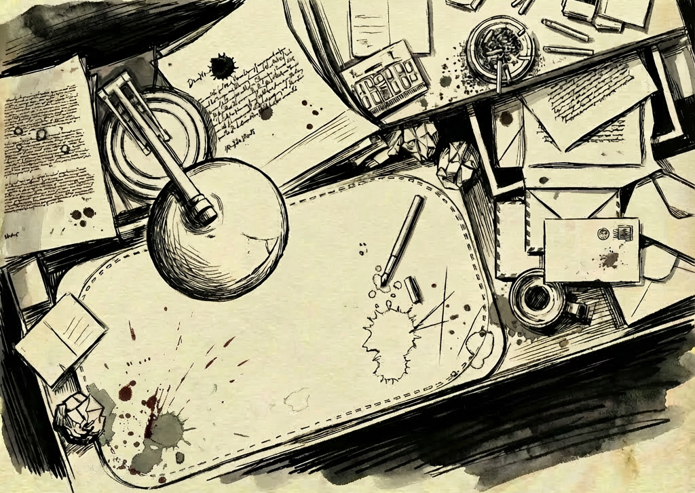

Different "Treatment" Events
To be a killer-or a savior?
The Vet follows Aya Quinn, a combat medic running contraband bio-augmentations through the quarantined vertical sprawl of Delta-12. Each choice exposes layers of corporate blackmail, rebel debts, and civilian casualties.
- Branching dialogue that remembers every triage call.
- Allies can abandon you if your ethics slip.
- Flashback operations reveal why the city wants you erased.